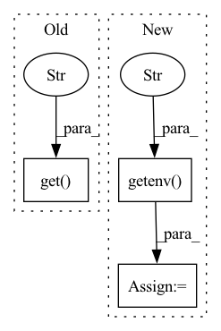

Pattern ID :29982
Before Change
"name": "TOKEN",
"value": body.get("token")
})
if body.get("kairon_url" ) and body.get("token"):
status = {"status": "Creating ECS Task"}
headers = {
"content-type": "application/json",After Change
region_name = os.getenv("REGION_NAME", "us-east-1")
security_groups = os.getenv("SECURITY_GROUPS", "").split(",")
container_name = os.getenv("CONTAINER_NAME")
kairon_url = os.getenv("KAIRON_URL" )
ecs = client("ecs", region_name=region_name)
print(event)
body = json.loads(event["body"])
if "user" in body and "bot" in body:In pattern: SUPERPATTERN
Frequency: 3
Non-data size: 3
Instances Fragment ID: 88944028
Project Name: digiteinfotech/kairon
Commit Name: af80f366722e7c6b5ade4316e159aca144ab4e00
Time: 2021-02-06
Author: shaikhfahad2526@gmail.com
File Name: cloud_functions/aws/training_data_generator.py
M Class Name: AnonimousClass
N Class Name: AnonimousClass
M Method Name: lambda_handler(2)
N Method Name: lambda_handler(2)
M Parent Class:
N Parent Class:
M File Name: cloud_functions/aws/training_data_generator.py
N File Name: cloud_functions/aws/training_data_generator.py
M Start Line: 9
M End Line: 101
N Start Line: 15
N End Line: 101
Before Change
extra_link_args = []
extra_compile_args = {"cxx": ["-O3", "-g", "-std=c++14"]}
if int(os.environ.get("DEBUG" , 0) ):
// if True:
extra_compile_args = {
"cxx": ["-O0", "-fno-inline", "-g", "-std=c++14"]}After Change
extra_link_args = []
extra_compile_args = {"cxx": ["-O3", "-g", "-std=c++14"]}
debug_mode = os.getenv( "DEBUG", "0" ) == "1"
if debug_mode:
print("Compiling in debug mode")
extra_compile_args = { Fragment ID: 88944031
Project Name: pytorch/pytorch
Commit Name: 7001a2f1e4d8382b4c255342b4b53eae9389f8b1
Time: 2022-07-21
Author: zou3519@gmail.com
File Name: functorch/setup.py
M Class Name: AnonimousClass
N Class Name: AnonimousClass
M Method Name: get_extensions(0)
N Method Name: get_extensions(0)
M Parent Class:
N Parent Class:
M File Name: functorch/setup.py
N File Name: functorch/setup.py
M Start Line: 34
M End Line: 34
N Start Line: 69
N End Line: 71
Before Change
self.logger = logging.getLogger(context)
self.logger.propagate = False
context_vars = {"name": os.environ.get("JINA_POD_NAME" , context) ,
"uptime": __uptime__,
"context": context}
self.add_handlers(log_config, **context_vars)After Change
log_config = complete_path(log_config)
if log_id is None:
log_id = os.getenv("JINA_LOG_ID" , None)
if name is None:
name = os.getenv("JINA_POD_NAME", context)
Fragment ID: 88944030
Project Name: jina-ai/jina
Commit Name: 1f1a3be903b63faec206610056d10628421b5f56
Time: 2020-11-11
Author: joan.martinez@jina.ai
File Name: jina/logging/logger.py
M Class Name: JinaLogger
N Class Name: JinaLogger
M Method Name: __init__(5)
N Method Name: __init__(3)
M Parent Class:
N Parent Class:
M File Name: jina/logging/logger.py
N File Name: jina/logging/logger.py
M Start Line: 88
M End Line: 104
N Start Line: 87
N End Line: 122